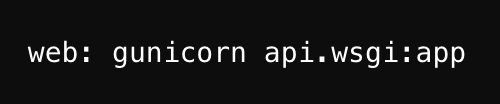

Introduction
With a background in Linguistics and Computer Science, I have always been interested in the interface between language and technology. This led me to build my pronunciation improvement app - a web application designed to help users practise and refine their English pronunciation. The app listens to the user’s speech input, analyzes it, and provides feedback to pinpoint where improvement might be needed.
Project Overview
Tech Stack and Libraries
Frontend
A React app that uses Chart.js for pitch visualization and WaveSurver.js for audio waveform rendering.
Backend
A Flask server that:
- Handles REST API endpoints for:
- Text-to-speech (TTS) requests (via the OpenAI TTS API).
- Pitch analysis (using Parselmouth for pitch extraction).
- Forced alignment (using torchaudio and FFmpeg for audio conversion and torchaudio.functional.forced_align for alignment).
- Serves the build React frontend via send_from_directory.
Audio Processing Libraries
- Parselmouth for pitch extraction.
- torchaudio for forced alignment and waveform manipulation.
- FFmpeg for audio format conversion.
Deployment to Heroku
- Heroku was good to start with as I was developing the app while it was small and had minimal dependencies.
- All that was needed was a Git push and a Procfile. The Procfile specifies how Heroku should launch the Flask app.
For example, this is what I included in mine:

-
This tells Heroku to run a Gunicorn web process using api.wsgi:app as the entry point.
-
To push to Heroku, I installed the Heroku CLI and followed instructions to login and create the Heroku app before pushing the code.
Deployment to Google Cloud Run
Why Google Cloud Run?
After exploring various deployment options, I chose Google Cloud Run for several reasons:
- Flexible Runtime Environment: Cloud Run allows custom Docker containers, which was important for my project’s dependencies like FFmpeg and torchaudio.
- Library Compatibility: Cloud Run’s container-based approach made it straightforward to include specialized audio processing libraries that are challenging to deploy on other platforms.
Deployment Strategy: Single Docker Container
I opted for a single Docker container that encapsulates both the React frontend and Flask backend. This approach offers:
- Simplicity: One codebase directory and a unified Dockerfile.
- Consistent Environment: Identical setup across local, staging, and production environments.
Deployment Steps
- Install Google Cloud SDK
- Authenticate with GCP
- Build container image with Cloud Build
- Deploy the container image to Cloud Run
Multi-Stage Dockerfile
My Dockerfile uses a multi-stage build:
- First stage: Build React frontend using Node
- Second stage: Use a slim Python base image, install dependencies, copy frontend build artifacts
- Run Gunicorn on port 8080
Conclusion
Both Heroku and Google Cloud Run have their own benefits. Heroku’s plug-and-play approach helped me get started quickly, while Cloud Run’s container approach gave me more flexibility and scalability for handling growth and specialized libraries like FFmpeg and torchaudio.